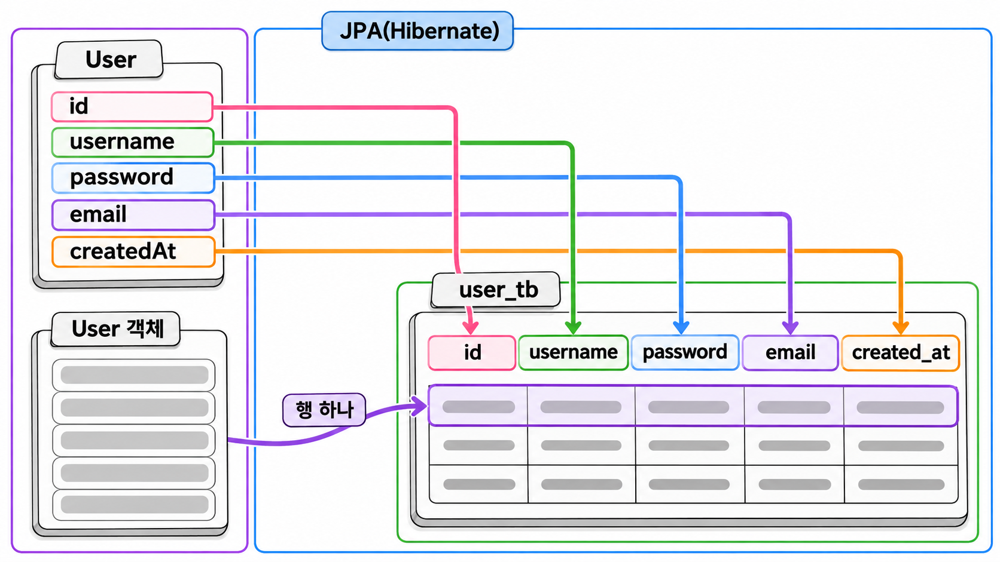
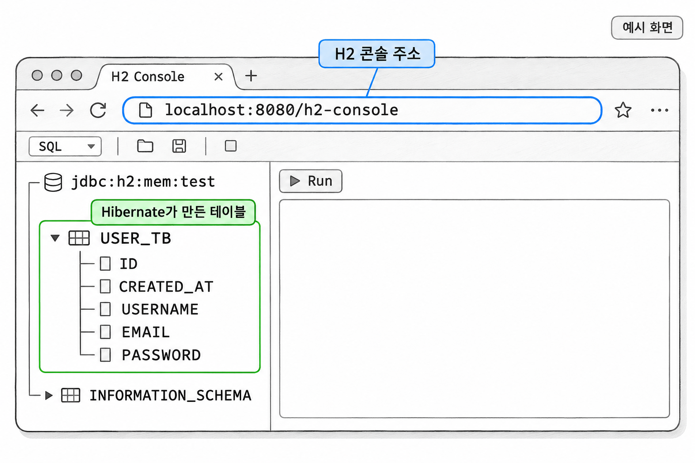
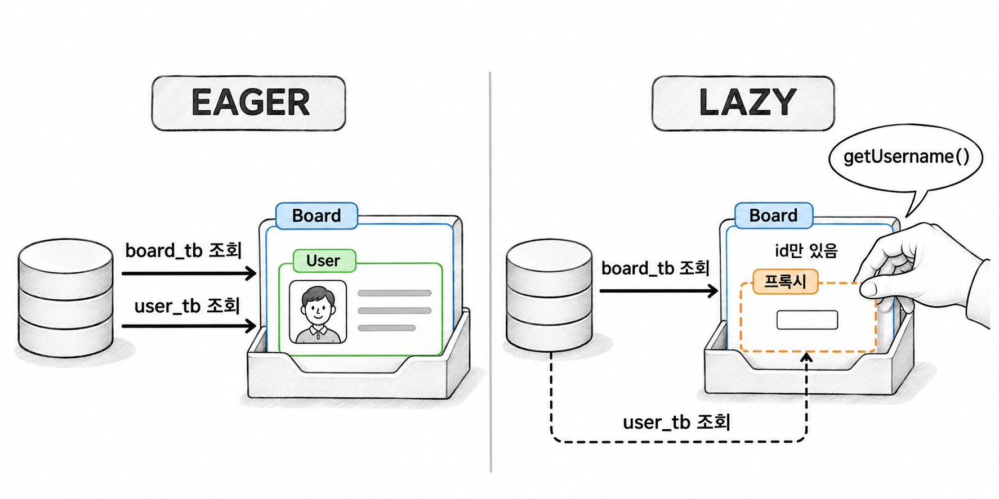
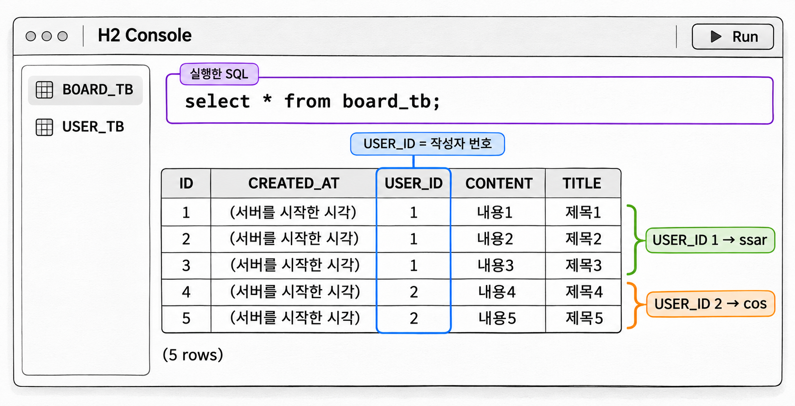

5장. JPA 엔티티란?
1. JPA의 개념
1.1 ORM과 JPA
자바 프로그램은 데이터를 객체로 다루고, 데이터베이스는 데이터를 테이블의 행으로 저장합니다. 객체는 필드와 다른 객체를 가리키는 참조로 이루어집니다. 테이블은 열과 외래 키로 이루어집니다. 두 구조가 이렇게 다르므로, 4장처럼 SQL만으로 개발하면 객체를 저장할 때마다 insert 문을 직접 써야 합니다. 조회 결과를 객체의 필드에 하나씩 옮겨 담는 코드도 매번 따로 써야 합니다.
ORM(Object-Relational Mapping, 객체-관계 매핑)은 객체와 테이블을 미리 짝지어 두고, 둘 사이의 변환을 프레임워크에 맡기는 기술입니다. 개발자가 객체를 저장하거나 조회하면 ORM 프레임워크가 그 동작에 맞는 SQL을 만들어 실행합니다.
JPA(Jakarta Persistence)는 자바에서 ORM을 쓰는 방법을 정한 표준 명세입니다. 명세는 약속을 적어 둔 문서라고 보면 됩니다. JPA는 "엔티티 클래스에는 @Entity를 붙인다", "기본 키 필드에는 @Id를 붙인다"처럼 개발자가 쓸 애너테이션과 인터페이스의 이름과 사용법을 정해 둘 뿐, 스스로 동작하는 코드는 없습니다.
그 약속대로 실제로 SQL을 만들고 실행하는 프로그램을 구현체라고 합니다. 자바의 인터페이스와 그것을 구현한 클래스의 관계와 같습니다. 이 책에서 쓰는 구현체는 Hibernate(하이버네이트)입니다. 우리는 코드에 JPA의 애너테이션을 쓰고, 실제 일은 Hibernate가 합니다. spring-boot-starter-data-jpa 스타터를 추가하면 Hibernate도 함께 들어옵니다.
| 구분 | 이름 | 하는 일 |
|---|---|---|
| 명세 | JPA (jakarta.persistence) | 매핑 애너테이션과 사용 규칙을 정함 |
| 구현체 | Hibernate | 매핑 정보를 읽어 SQL을 만들고 실행함 |
| 스프링 지원 | Spring Data JPA | JPA를 더 쉽게 쓰도록 Repository를 제공함(6장) |
이 장에서 쓰는 애너테이션은 대부분 JPA 표준 패키지인 jakarta.persistence에 들어 있습니다. @CreationTimestamp처럼 Hibernate에만 있는 기능은 org.hibernate.annotations 패키지에서 가져옵니다. 그래서 import 문을 보면 표준 기능인지 Hibernate 기능인지 구분할 수 있습니다.
1.2 엔티티와 테이블
엔티티(entity)는 JPA가 관리하는 클래스입니다. 엔티티 하나는 데이터베이스 테이블 하나와 짝을 이룹니다. 엔티티의 필드는 테이블의 열이 되고, 엔티티 객체 하나는 테이블의 행 하나가 됩니다.

그림 5-1에서 User 클래스의 createdAt 필드는 user_tb 테이블의 created_at 열과 짝을 이룹니다. Spring Boot는 자바의 낙타 표기법(camelCase) 이름을 데이터베이스의 밑줄 표기법(snake_case) 이름으로 바꿔 열 이름을 정합니다. 덕분에 필드 이름은 자바 관례대로, 열 이름은 SQL 관례대로 쓸 수 있습니다.
4장에서는 H2 콘솔에서 CREATE TABLE을 직접 실행해 회원 테이블과 글 테이블을 만들었습니다. JPA를 쓰면 테이블을 손으로 만들지 않아도 됩니다. 서버가 시작할 때 Hibernate가 엔티티 클래스를 읽고, 그 구조에 맞는 create table 문을 실행하게 할 수 있습니다. 이 동작을 어떻게 할지는 다음 항의 설정으로 정합니다. 블로그 API에서 처음 만들 엔티티는 회원(User)과 게시글(Board)입니다.
1.3 JPA 설정(ddl-auto · show-sql · open-in-view)
JPA의 동작 방식은 application.properties에서 정합니다. 일부 설정 이름에 hibernate가 들어가는 것은 SQL을 실제로 만들고 실행하는 쪽이 Hibernate이기 때문입니다.
예제 5-1 — JPA 설정 넣기
이어서: 예제 4-1
파일명: src/main/resources/application.properties
server.port=8080
spring.servlet.encoding.charset=UTF-8
spring.servlet.encoding.force=true
spring.datasource.driver-class-name=org.h2.Driver
spring.datasource.url=jdbc:h2:mem:test
spring.datasource.username=sa
spring.datasource.password=
spring.h2.console.enabled=true
spring.jpa.hibernate.ddl-auto=create
spring.jpa.show-sql=true
spring.jpa.properties.hibernate.format_sql=true
spring.jpa.open-in-view=false실행 결과
서버를 끄고 .\gradlew.bat bootRun으로 다시 실행합니다. 4장에서 서버를 켤 때마다 보이던 다음 경고가 더는 나오지 않습니다.
spring.jpa.open-in-view is enabled by default. Therefore, database queries may be performed during view rendering. Explicitly configure spring.jpa.open-in-view to disable this warning나머지 시작 로그는 4장과 같습니다. 아직 엔티티가 없어 Hibernate가 실행할 SQL도 없으므로 SQL 로그는 찍히지 않습니다.
spring.jpa.hibernate.ddl-auto는 서버가 시작할 때 테이블을 어떻게 다룰지 정합니다. DDL(Data Definition Language)은 create table처럼 테이블 구조를 정하는 SQL입니다.
| 값 | 동작 |
|---|---|
create | 시작할 때 기존 테이블을 지우고 엔티티를 보고 새로 만듦 |
create-drop | create와 같고, 종료할 때 테이블을 지움 |
update | 엔티티와 달라진 부분만 테이블에 반영 |
validate | 엔티티와 테이블이 맞는지 검사만 함 |
none | 아무것도 하지 않음 |
이 책은 create를 씁니다. 엔티티 클래스를 고친 뒤 서버를 다시 켜기만 하면 테이블이 새 구조로 바뀌어 배우기에 편합니다. 대신 시작할 때마다 기존 데이터가 모두 지워지므로 실제 서비스에서는 쓰지 않습니다. 운영 환경의 설정은 21장에서 따로 나눕니다.
spring.jpa.show-sql=true는 Hibernate가 실행하는 SQL을 콘솔에 출력합니다. spring.jpa.properties.hibernate.format_sql=true는 그 SQL을 여러 줄로 나눠 읽기 좋게 보여 줍니다. JPA가 SQL을 대신 만들어 주므로, 어떤 SQL이 몇 번 실행되는지는 자바 코드만 봐서는 알기 어렵습니다. 그래서 SQL 로그를 보는 습관이 필요합니다. 6장에서 다루는 N+1 문제도 이 로그로 찾아냅니다.
spring.jpa.open-in-view는 데이터베이스 연결을 언제까지 붙잡아 둘지 정합니다. 기본값 true는 요청 하나를 처리하고 응답을 다 보낼 때까지 연결을 열어 둡니다. 편리하지만 데이터베이스와 상관없는 일을 하는 동안에도 연결을 쥐고 있게 됩니다. 4장에서 본 것처럼 커넥션 풀에는 연결이 정해진 개수만 있으므로, 요청이 몰리면 연결이 모자라기 쉽습니다. 기본값을 그대로 두었을 때 Spring Boot가 경고를 남긴 것도 이 때문입니다.
이 책은 이 설정을 false로 끕니다. 끄면 연결은 Service의 트랜잭션이 끝날 때 함께 반납됩니다. 그 대신 트랜잭션이 끝난 뒤 연관된 데이터를 꺼내려 하면 오류가 납니다. 이 오류가 왜 나는지는 3.2에서 짚고, 실제로 오류를 내 보고 피하는 방법은 6장에서 확인합니다.
2. 엔티티 매핑
2.1 @Entity · @Table · @Id · @GeneratedValue
엔티티 클래스에는 다음 네 애너테이션이 기본으로 붙습니다.
| 애너테이션 | 붙는 곳 | 뜻 |
|---|---|---|
@Entity | 클래스 | JPA가 관리하는 엔티티로 등록합니다 |
@Table(name = "...") | 클래스 | 연결할 테이블 이름을 정합니다. 없으면 클래스 이름을 밑줄 표기법으로 바꿔 씁니다 |
@Id | 필드 | 기본 키 열로 지정합니다 |
@GeneratedValue | 필드 | 기본 키 값을 자동으로 만들게 합니다 |
기본 문법
@Entity
@Table(name = "테이블명")
public class 클래스명 {
@Id
@GeneratedValue(strategy = GenerationType.IDENTITY)
private Integer id;
}회원 엔티티에 @Table을 붙이는 이유는 user라는 이름 때문입니다. user는 H2를 비롯한 여러 데이터베이스에서 예약어라서, 테이블 이름으로 그대로 쓰면 create table 문이 실패할 수 있습니다. 그래서 클래스 이름은 User로 두고, 테이블 이름만 4장과 같은 user_tb로 따로 정합니다.
GenerationType.IDENTITY는 기본 키 값을 데이터베이스의 자동 증가 기능에 맡기는 전략입니다. 새 행이 들어갈 때마다 데이터베이스가 1, 2, 3처럼 번호를 붙이므로 개발자는 id에 값을 넣지 않습니다. id의 자료형을 int가 아니라 Integer로 둔 것도 이와 관련이 있습니다. 아직 저장하지 않은 객체는 id가 null이므로, 저장 전과 저장 후를 구분할 수 있습니다.
이제 회원 엔티티 전체를 작성합니다. 이 클래스에 붙은 나머지 애너테이션은 2.2부터 2.4까지 차례로 설명합니다.
예제 5-2 — 회원 엔티티 만들기
이어서: 예제 5-1
파일명: src/main/java/com/newtenco/blog/user/User.java
package com.newtenco.blog.user;
import jakarta.persistence.Column;
import jakarta.persistence.Entity;
import jakarta.persistence.GeneratedValue;
import jakarta.persistence.GenerationType;
import jakarta.persistence.Id;
import jakarta.persistence.Table;
import lombok.Getter;
import lombok.NoArgsConstructor;
import org.hibernate.annotations.CreationTimestamp;
import java.sql.Timestamp;
@NoArgsConstructor
@Getter
@Entity
@Table(name = "user_tb")
public class User {
@Id
@GeneratedValue(strategy = GenerationType.IDENTITY)
private Integer id;
@Column(unique = true, length = 20, nullable = false)
private String username;
@Column(length = 60, nullable = false)
private String password;
@Column(length = 30, nullable = false)
private String email;
@CreationTimestamp
private Timestamp createdAt;
}실행 결과
.\gradlew.bat bootRun으로 서버를 실행합니다. show-sql과 format_sql 설정 덕분에 Hibernate가 실행한 DDL이 콘솔에 찍힙니다. 다음은 그 가운데 create table 부분입니다.
Hibernate:
create table user_tb (
id integer generated by default as identity,
created_at timestamp(6) not null,
username varchar(20) not null unique,
email varchar(30) not null,
password varchar(60) not null,
primary key (id)
)열의 순서는 Hibernate 버전에 따라 다르게 찍힐 수 있습니다.
4장에서 직접 썼던 CREATE TABLE 문을 이번에는 Hibernate가 User 클래스를 보고 만들었습니다. 테이블 이름은 @Table에 적은 대로 user_tb입니다. @GeneratedValue(strategy = GenerationType.IDENTITY)는 H2에서 generated by default as identity라는 자동 증가 열로 바뀌었습니다.
@CreationTimestamp를 붙인 created_at에는 nullable = false를 적지 않았는데도 not null이 붙었습니다. Spring Boot 4.1.3이 쓰는 Hibernate 7은 생성 시각 열을 비울 수 없는 열로 만듭니다.
H2 콘솔(http://localhost:8080/h2-console, JDBC URL jdbc:h2:mem:test)에 접속하면 왼쪽 목록에서도 테이블을 확인할 수 있습니다.

생성형 예시 · 실제 실행 안 함
2.2 @Column 제약 조건
@Column은 필드와 연결되는 열의 세부 규칙을 정합니다. @Column이 없는 필드도 열이 되지만, 이때는 길이와 제약 조건이 기본값을 따릅니다. 예제 5-2에서 쓴 속성과 그 결과로 만들어진 DDL을 나란히 보면 다음과 같습니다.
| 속성 | 뜻 | 기본값 | 예제 5-2의 DDL |
|---|---|---|---|
length | 문자열 열의 최대 길이 | 255 | username varchar(20) |
nullable = false | 빈 값(null) 금지 | true | not null |
unique = true | 같은 값 중복 금지 | false | unique |
회원 아이디(username)는 로그인할 때 회원을 찾는 기준입니다. 같은 아이디가 두 번 들어가면 누구로 로그인시킬지 정할 수 없으므로 unique = true를 붙였습니다. password의 길이 60은 10장에서 쓸 BCrypt 암호화 결과의 길이에 맞춘 값입니다. 암호화한 비밀번호는 원래 비밀번호보다 훨씬 긴 문자열이므로, 처음부터 그 길이를 담을 수 있게 열을 만들어 둡니다.
이 속성들은 테이블을 만들 때 DDL에 들어가는 제약 조건입니다. 그래서 21자짜리 아이디를 저장하려 하면 데이터베이스가 저장을 거부하고 오류를 냅니다. 데이터베이스가 내는 오류 메시지는 사용자에게 그대로 보여 주기에 알맞지 않습니다. 요청이 들어오는 단계에서 입력값을 먼저 검사하는 방법은 11장에서 따로 다룹니다.
2.3 @CreationTimestamp
@CreationTimestamp는 Hibernate가 제공하는 애너테이션입니다. 엔티티를 처음 저장할 때 Hibernate가 현재 시각을 이 애너테이션이 붙은 필드에 넣습니다. 회원이나 글이 만들어진 시각을 담는 createdAt 필드에 붙여 두면, 저장하는 코드마다 시각을 직접 넣지 않아도 됩니다.
코드 조각
@CreationTimestamp
private Timestamp createdAt;이 애너테이션은 JPA를 거쳐 저장할 때만 동작합니다. 4절에서는 SQL 파일로 샘플 데이터를 직접 insert하는데, 이 과정에는 Hibernate가 끼어들지 않습니다. 그래서 SQL 파일에서는 created_at 값을 now()로 직접 넣습니다.
2.4 기본 생성자와 @Getter
JPA는 데이터베이스에서 행을 조회하면 엔티티 객체를 만들고 열 값을 필드에 채웁니다. 이때 JPA는 어떤 생성자에 어떤 값을 넘겨야 할지 알 수 없습니다. 그래서 매개변수가 없는 기본 생성자로 객체를 먼저 만든 뒤 필드를 채웁니다. JPA 명세가 엔티티에 public이나 protected 기본 생성자를 두도록 정한 이유입니다. 기본 생성자가 없으면 조회 결과로 엔티티 객체를 만들 수 없습니다.
Lombok의 @NoArgsConstructor는 컴파일할 때 이 기본 생성자를 만들어 줍니다. @Getter는 모든 필드의 getter 메서드(getId(), getUsername() 등)를 만듭니다. 예제 5-2에 붙은 두 애너테이션은 다음 코드를 직접 쓴 것과 같습니다.
코드 조각
public User() {
}
public Integer getId() {
return id;
}
public String getUsername() {
return username;
}
// password, email, createdAt의 getter도 같은 모양으로 만들어집니다.@Setter는 일부러 붙이지 않았습니다. setter가 있으면 어느 코드에서든 필드 값을 바꿀 수 있어서, 엔티티 값이 어디서 바뀌었는지 추적하기 어렵습니다. 값을 바꿔야 할 때는 바꾸는 이유가 이름에 드러나는 메서드를 엔티티 안에 따로 만듭니다. 이 방법은 15장의 글 수정에서 다룹니다.
3. 연관관계 매핑
3.1 @ManyToOne으로 작성자 연결
게시글에는 작성자가 있습니다. 회원 한 명은 글을 여러 개 쓸 수 있고, 글 하나의 작성자는 한 명입니다. 글 쪽에서 보면 여러 글(Many)이 한 회원(One)에 속하는 관계입니다.
4장에서 본 것처럼 테이블은 이 관계를 외래 키 열로 나타냅니다. board_tb에 user_id 열을 두고 작성자의 id를 저장합니다. 엔티티는 같은 관계를 객체 참조로 나타냅니다. Board에 Integer userId 대신 User user 필드를 두고 @ManyToOne을 붙이면, JPA가 이 필드를 외래 키 열과 연결합니다.
기본 문법
@ManyToOne(fetch = FetchType.LAZY)
private 대상엔티티 필드명;외래 키 열 이름을 따로 정하지 않으면 필드명_대상기본키열 규칙으로 정해집니다. 필드 이름이 user이고 User의 기본 키 열이 id이므로 열 이름은 user_id가 됩니다.
예제 5-3 — 게시글 엔티티에 작성자 연결하기
이어서: 예제 5-2
파일명: src/main/java/com/newtenco/blog/board/Board.java
package com.newtenco.blog.board;
import com.newtenco.blog.user.User;
import jakarta.persistence.Column;
import jakarta.persistence.Entity;
import jakarta.persistence.FetchType;
import jakarta.persistence.GeneratedValue;
import jakarta.persistence.GenerationType;
import jakarta.persistence.Id;
import jakarta.persistence.ManyToOne;
import jakarta.persistence.Table;
import lombok.Getter;
import lombok.NoArgsConstructor;
import org.hibernate.annotations.CreationTimestamp;
import java.sql.Timestamp;
@NoArgsConstructor
@Getter
@Entity
@Table(name = "board_tb")
public class Board {
@Id
@GeneratedValue(strategy = GenerationType.IDENTITY)
private Integer id;
@Column(length = 100, nullable = false)
private String title;
@Column(length = 1000, nullable = false)
private String content;
@ManyToOne(fetch = FetchType.LAZY)
private User user;
@CreationTimestamp
private Timestamp createdAt;
}실행 결과
서버가 켜져 있으면 Build > Build Project(Ctrl + F9)로 다시 컴파일합니다. 1장 2.4에서 본 것처럼 devtools가 바뀐 클래스를 감지해 서버를 다시 시작합니다. 서버가 꺼져 있으면 .\gradlew.bat bootRun으로 실행합니다. 콘솔에 찍힌 DDL 가운데 board_tb를 만드는 부분과 외래 키를 거는 부분은 다음과 같습니다.
Hibernate:
create table board_tb (
id integer generated by default as identity,
user_id integer,
created_at timestamp(6) not null,
title varchar(100) not null,
content varchar(1000) not null,
primary key (id)
)
Hibernate:
alter table if exists board_tb
add constraint FKxxxxxxxxxxxxxxxxxxxxxxxxx
foreign key (user_id)
references user_tbFKxxxxxxxxxxxxxxxxxxxxxxxxx 자리에는 Hibernate가 자동으로 지은 제약 조건 이름이 들어갑니다. 이 이름은 FK 뒤에 영문과 숫자가 섞인 긴 문자열이 붙은 형태입니다. 열 순서는 예제 5-2처럼 버전에 따라 다를 수 있습니다.
자바 코드에는 user_id라는 이름이 한 번도 나오지 않습니다. 그런데도 User user 필드 하나에서 user_id integer 열과, user_tb를 가리키는 외래 키 제약 조건이 만들어졌습니다. 코드에서는 board.getUser()처럼 작성자를 객체로 다루고, 테이블에는 작성자의 번호만 저장됩니다.
3.2 지연 로딩(LAZY)과 즉시 로딩(EAGER)
글을 조회할 때 작성자 정보까지 함께 가져올지 정하는 것을 로딩 전략(fetch type)이라고 합니다. 예제 5-3의 fetch = FetchType.LAZY가 로딩 전략을 정한 부분입니다.
즉시 로딩(EAGER)은 글을 조회하는 순간 작성자도 함께 조회합니다. 지연 로딩(LAZY)은 글만 먼저 조회하고, 작성자 자리에 진짜 User 대신 프록시(proxy)라는 대리 객체를 넣어 둡니다. 프록시는 작성자의 id만 알고 있습니다. 코드가 getUsername()처럼 다른 값을 처음 꺼낼 때가 되어서야 user_tb를 조회합니다.

| 구분 | 즉시 로딩(EAGER) | 지연 로딩(LAZY) |
|---|---|---|
| 작성자를 조회하는 때 | 글을 조회할 때 함께 | 작성자의 값을 처음 꺼낼 때 |
| 작성자 자리에 들어가는 것 | 실제 User 객체 | 프록시 객체 |
@ManyToOne에서 쓰려면 | 아무것도 적지 않음(기본값) | fetch = FetchType.LAZY로 직접 지정 |
@ManyToOne은 아무것도 적지 않으면 EAGER로 동작합니다. 이 책이 LAZY를 직접 적은 이유입니다. EAGER로 두면 작성자가 필요 없는 조회에서도 매번 user_tb를 함께 읽습니다. 글 목록처럼 여러 행을 한 번에 조회할 때는 글마다 작성자 조회 쿼리가 따로 나가 쿼리 수가 크게 늘기도 합니다. 그래서 필요한 순간에 필요한 만큼만 가져오도록 LAZY를 기본으로 둡니다.
LAZY에는 알아 둘 함정이 하나 있습니다. 프록시가 작성자를 조회하려면 영속성 컨텍스트(persistence context)가 아직 열려 있어야 합니다. 영속성 컨텍스트는 JPA가 조회한 엔티티를 관리하는 공간이며, 트랜잭션이 끝나면 함께 닫힙니다. 1.3에서 spring.jpa.open-in-view=false로 설정했으므로 영속성 컨텍스트는 Service의 트랜잭션이 끝날 때 닫힙니다. 그 뒤 Controller에서 board.getUser().getUsername()을 호출하면 프록시가 작성자를 조회하지 못해 LazyInitializationException 오류가 납니다. 이 오류를 피하는 방법(join fetch)과 트랜잭션 범위는 6장에서 실제 조회 코드와 함께 다룹니다.
4. 샘플 데이터 넣기
4.1 data.sql 작성
H2 메모리 DB는 서버를 끄면 데이터가 모두 사라집니다. 게다가 ddl-auto=create 설정 때문에 서버를 켤 때마다 빈 테이블이 새로 만들어집니다. 다음 장부터 API를 바로 확인하려면 서버가 시작될 때마다 회원과 글이 몇 개씩 들어가 있어야 합니다.
Spring Boot에는 서버가 시작될 때 SQL 스크립트 파일을 읽어 실행하는 기능이 있습니다. H2 같은 내장(embedded) 데이터베이스를 쓰면 이 기능을 따로 켜지 않아도 동작합니다. 스크립트 파일의 기본 위치는 classpath:data.sql입니다. 이 책은 SQL 파일을 db 폴더에 모아 두므로 spring.sql.init.data-locations로 파일 위치를 알려 줍니다. classpath:는 클래스패스에서 찾으라는 뜻이며, 우리 프로젝트에서는 src/main/resources 폴더 아래를 가리킵니다.
예제 5-4 — 샘플 데이터 파일 연결하기
이어서: 예제 5-3
파일명: src/main/resources/db/data.sql
insert into user_tb (username, password, email, created_at) values ('ssar', '$2a$10$eiDus5jn3LsNyfjng4/HxukQh.7EZmn1ZNL1g4s3kkqPYpwY5DiuO', 'ssar@metacoding.com', now());
insert into user_tb (username, password, email, created_at) values ('cos', '$2a$10$eiDus5jn3LsNyfjng4/HxukQh.7EZmn1ZNL1g4s3kkqPYpwY5DiuO', 'cos@metacoding.com', now());
insert into board_tb (title, content, user_id, created_at) values ('제목1', '내용1', 1, now());
insert into board_tb (title, content, user_id, created_at) values ('제목2', '내용2', 1, now());
insert into board_tb (title, content, user_id, created_at) values ('제목3', '내용3', 1, now());
insert into board_tb (title, content, user_id, created_at) values ('제목4', '내용4', 2, now());
insert into board_tb (title, content, user_id, created_at) values ('제목5', '내용5', 2, now());파일명: src/main/resources/application.properties
server.port=8080
spring.servlet.encoding.charset=UTF-8
spring.servlet.encoding.force=true
spring.datasource.driver-class-name=org.h2.Driver
spring.datasource.url=jdbc:h2:mem:test
spring.datasource.username=sa
spring.datasource.password=
spring.h2.console.enabled=true
spring.jpa.hibernate.ddl-auto=create
spring.jpa.show-sql=true
spring.jpa.properties.hibernate.format_sql=true
spring.jpa.open-in-view=false
spring.sql.init.data-locations=classpath:db/data.sql실행 결과
서버를 실행하면 시작 도중에 다음 오류가 나며 서버가 멈춥니다(로그 일부).
Caused by: org.springframework.jdbc.datasource.init.ScriptStatementFailedException: Failed to execute SQL script statement #1 of class path resource [db/data.sql]: insert into user_tb (username, password, email, created_at) values ('ssar', '$2a$10$eiDus5jn3LsNyfjng4/HxukQh.7EZmn1ZNL1g4s3kkqPYpwY5DiuO', 'ssar@metacoding.com', now())
...
Caused by: org.h2.jdbc.JdbcSQLSyntaxErrorException: Table "USER_TB" not found (this database is empty); SQL statement:Table "USER_TB" not found (this database is empty)는 user_tb 테이블이 없고 데이터베이스가 아예 비어 있다는 뜻입니다. statement #1은 data.sql의 첫 번째 문장에서 실패했다는 표시입니다. 예제 5-3까지는 테이블이 잘 만들어졌는데 왜 지금은 비어 있는지는 4.2에서 살펴봅니다.
data.sql에 넣은 값도 몇 가지 짚어 둡니다. 글의 user_id에 넣은 1과 2는 먼저 넣은 회원 ssar과 cos의 id입니다. IDENTITY 전략은 1번부터 번호를 붙이므로, 회원을 먼저 넣어야 글이 가리킬 번호가 생깁니다. created_at에 now()를 직접 넣은 것은 2.3에서 본 것처럼 SQL 파일에서는 @CreationTimestamp가 동작하지 않기 때문입니다. password의 긴 문자열은 BCrypt로 암호화한 비밀번호이며, 10장에서 다룹니다.
4.2 테이블 생성 뒤에 데이터 넣기(defer-datasource-initialization)
예제 5-4가 실패한 원인은 실행 순서입니다. Spring Boot는 기본적으로 SQL 스크립트를 먼저 실행하고 그다음에 Hibernate를 준비합니다. 그런데 ddl-auto=create로 테이블을 만드는 쪽은 Hibernate입니다. 그래서 data.sql이 실행되는 시점에는 아직 테이블이 하나도 없습니다.
spring.jpa.defer-datasource-initialization=true를 넣으면 SQL 스크립트 실행이 Hibernate가 테이블을 만든 뒤로 미뤄집니다. 시작 순서는 다음과 같이 바뀝니다.
| 순서 | 기본 동작 | defer-datasource-initialization=true |
|---|---|---|
| 1 | data.sql 실행(테이블 없음 → 실패) | Hibernate가 엔티티를 읽고 테이블 생성 |
| 2 | Hibernate가 테이블 생성 | data.sql 실행(테이블 있음 → 성공) |
예제 5-5 — 테이블을 만든 뒤 샘플 데이터 넣기
이어서: 예제 5-4
파일명: src/main/resources/application.properties
server.port=8080
spring.servlet.encoding.charset=UTF-8
spring.servlet.encoding.force=true
spring.datasource.driver-class-name=org.h2.Driver
spring.datasource.url=jdbc:h2:mem:test
spring.datasource.username=sa
spring.datasource.password=
spring.h2.console.enabled=true
spring.jpa.hibernate.ddl-auto=create
spring.jpa.show-sql=true
spring.jpa.properties.hibernate.format_sql=true
spring.jpa.open-in-view=false
spring.sql.init.data-locations=classpath:db/data.sql
spring.jpa.defer-datasource-initialization=true실행 결과
서버가 오류 없이 시작됩니다. H2 콘솔에 접속해 다음 SQL을 실행합니다.
코드 조각
select * from board_tb;ID USER_ID CREATED_AT TITLE CONTENT
1 1 (서버를 시작한 시각) 제목1 내용1
2 1 (서버를 시작한 시각) 제목2 내용2
3 1 (서버를 시작한 시각) 제목3 내용3
4 2 (서버를 시작한 시각) 제목4 내용4
5 2 (서버를 시작한 시각) 제목5 내용5열 순서는 2절과 3절의 DDL에서 만들어진 순서를 따르므로 버전에 따라 다를 수 있습니다. select * from user_tb;를 실행하면 회원 ssar과 cos도 확인할 수 있습니다.

생성형 예시 · 실제 실행 안 함
글 1~3의 USER_ID는 1이고 글 4와 5는 2입니다. 테이블에는 작성자의 번호만 들어 있습니다. 이 번호로 작성자를 찾아 Board의 user 필드에 연결하는 일은 JPA가 맡습니다. 이제 서버를 켤 때마다 회원 2명과 글 5개가 준비되므로, 6장에서는 이 데이터로 글 목록 API를 만듭니다.